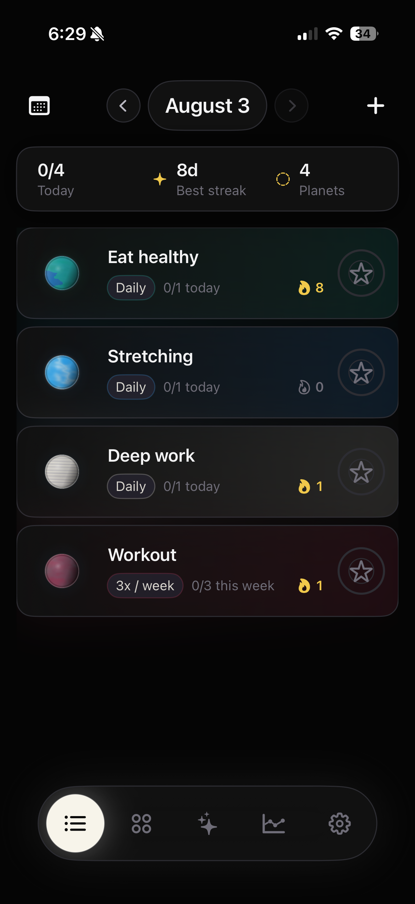
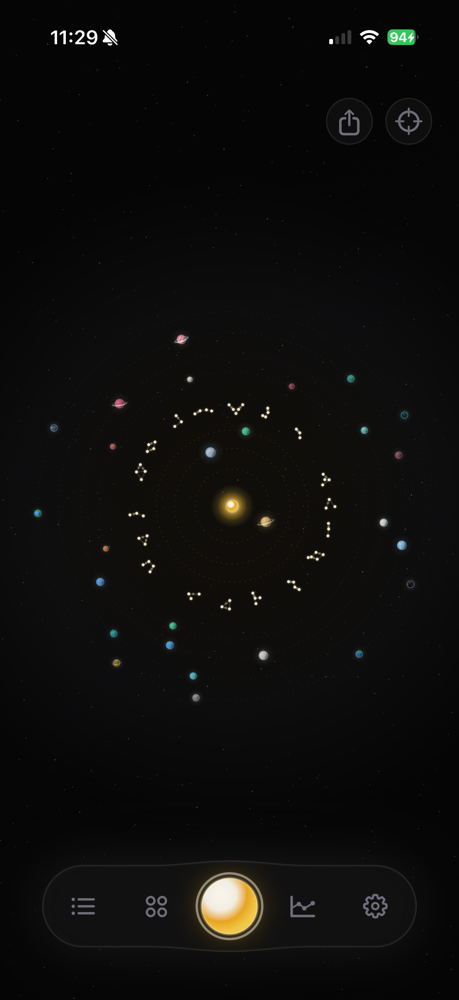
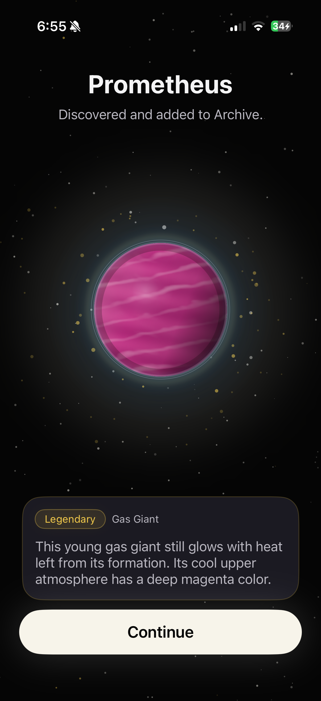
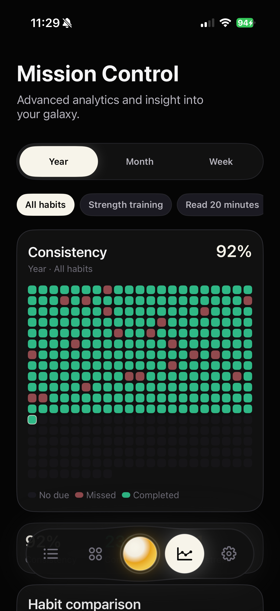

Make room for
your rhythm.
Choose a habit. Give it a schedule that fits your life. Then show up, one day at a time.
Daily, weekly, or the days that work for you.

Your habits.
Your galaxy.
Small steps become something extraordinary.
A habit tracker for
iPhone and iPad.
Now on the App Store
That morning walk. A few pages before bed. Showing up for yourself, again. In Solyx, the little things add up to a whole new world.
From your first habit to your next discovery.
Choose a habit. Give it a schedule that fits your life. Then show up, one day at a time.
Daily, weekly, or the days that work for you.

Every habit gets a planet. Your completions build stars and reveal constellations around it.
A growing record of the work you put in.

A new world. An unexpected constellation. Keep going, and see what your galaxy has waiting for you.
108 planets. 108 constellations. Yours to discover.

One missed day isn't the whole story. Mission Control helps you see your consistency over weeks, months, and years.
Your progress, with a little perspective.

New worlds to find. Constellations to make your own.
108 planets. 108 constellations. One galaxy that's yours.
Your habits and galaxy stay on your device. No profile to build or feed to keep up with.
Flexible schedules and optional reminders make space for the way you actually live.
Choose a galaxy theme, name your universe, and make your progress your own.
Solyx is available now on the App Store for iPhone and iPad. Download it using the button on this page.
Each habit receives a planet. Logging completions builds stars, which form constellations over time. Completions also bring you closer to discovering new planets.
Solyx requires a monthly or yearly subscription. Eligible new subscribers can try the yearly plan free for 7 days. You will see the full price and renewal terms before subscribing in the app.
No. Your habits and galaxy are stored on your device. Apple handles purchases, and RevenueCat manages subscription access and limited subscription analytics. Read our privacy policy for the details.
Solyx is built for iPhone and iPad running iOS or iPadOS 17 or later. An Android version has not been announced.
A habit tracker that gives your effort
somewhere to live.
Subscription required. 7-day yearly trial for eligible new subscribers.